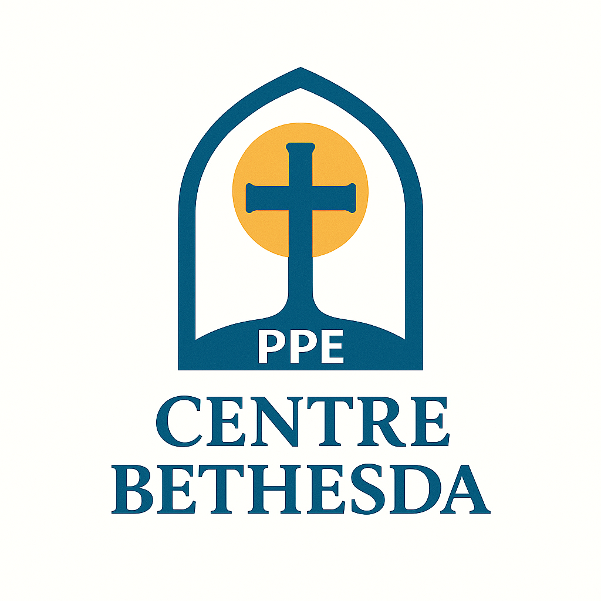

Un sanctuaire de silence et de prière, fondé sur l'Évangile et la compassion. Inspiré de la piscine de Bethesda (Jean 5), notre centre est un lieu de guérison, d'écoute et de transformation.
Fondé par une communauté religieuse, le centre incarne la foi vivante et l'hospitalité chrétienne. Il s'inspire de la Parole pour offrir repos et réconfort.
Une équipe d'accompagnateurs spirituels vous accueille avec bienveillance : prêtres, religieuses, laïcs formés à l'écoute et à la présence.
 FR
FR
 EN
EN